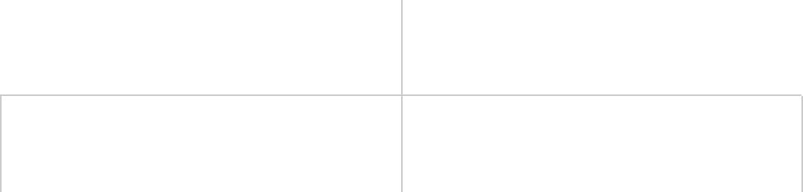
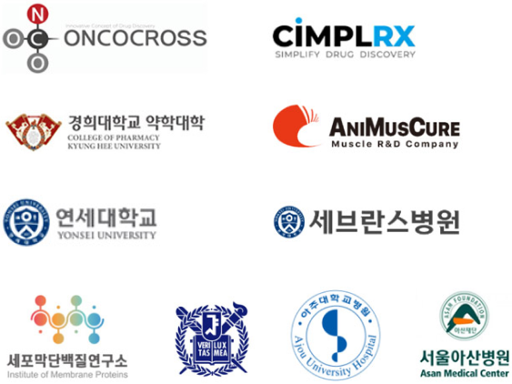

> 연구개발 > 조직 및 업무
organization and business
조직 및 업무
연구 개발 본부
동화약품 연구개발본부는 연구소의 창의적 혁신, 개발실의 전문성,
그리고 Consumer Insight팀의 소비자 중심 통찰력을 결합해 인류 건강 증진을 목표로 합니다.
미래 지향적인 기술과 깊은 분석으로 모두가 신뢰할 수 있는 가치를 만들어갑니다.

- 연구소
- ・ 혁신신약 / 개량신약 연구
・ 신제품 / 신제형 연구
・ 기능성 소재 연구
- 개발실
- ・ ETC제품 개발/기획
・ 인허가, 약가, 특허
・ 임상, PV/PMS, 학술지원
- Consumer Insight팀
- ・ OTC, 건기식 등 신제품 개발/기획
・ 소비자 조사를 통한 니즈 발굴
기술혁신 네트워크
동화약품 연구소는 혁신 신약과 제품 개발 역량을 확보하기 위해
AI 기업, 대학, 병원 등과 다양한 네트워크 구축 및 공동연구를 활발히 수행하고 있습니다.
- 